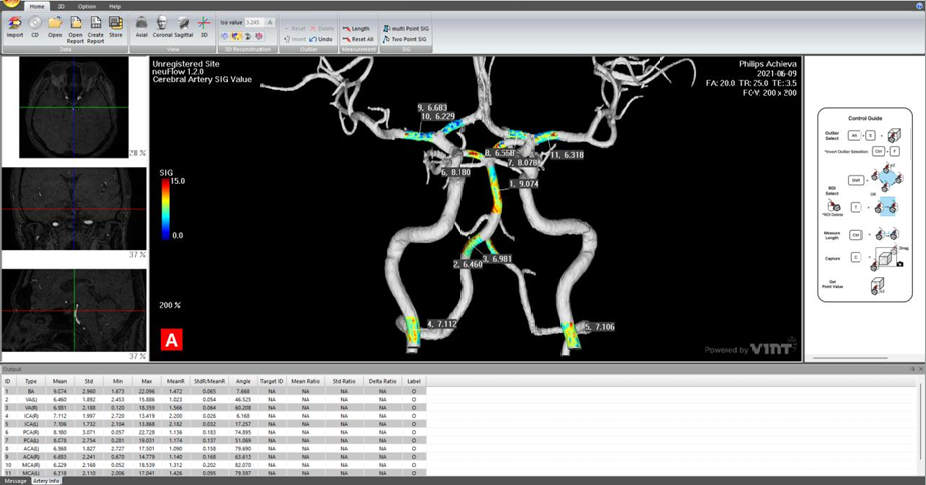

TOF-MRA
불러오기
기존에 촬영한 MRA 영상을 그대로 사용합니다.

NEUFLOWBRAIN VESSEL · SIG ANALYSIS
이미 찍은 MRA 한 번으로,
뇌혈관을 색과 숫자로.
NeuFlow는 TOF-MRA 한 번으로 뇌혈관을 3D 컬러와 SIG 수치로 분석하는 소프트웨어입니다. 추가 촬영도, 조영제도 필요 없습니다.
2D 흑백 MRA가 놓치던 혈관벽의 혈류역학 정보를, 색과 숫자로 정량화합니다. 병원에서 이미 찍는 TOF-MRA 한 번이면 충분합니다.
추가 촬영 0회. 조영제 없음. 분석은 약 5분. 판독실에 놓이는 것은 새로운 장비가 아니라, 새로운 시선입니다.
MRA 한 장이 보고서가 되기까지, 다섯 단계가 한 번에 이어집니다. 의료진은 평소처럼 촬영하고, NeuFlow가 나머지를 계산합니다.
기존에 촬영한 MRA 영상을 그대로 사용합니다.

자동 분할로 3차원 혈관 구조를 생성합니다.

혈류역학 데이터를 색으로 시각화합니다.

관심 혈관의 지름·길이·SIG 수치를 측정합니다.

환자 설명용 리포트를 자동으로 생성합니다.
04 FEATURES
혈관을 따라 내려가며 만나는 여섯 가지 기능. 한 번의 분석이 판독의 근거가 되고, 환자가 이해하는 설명이 됩니다.

전체 혈관과 선택 혈관의 혈류역학 특성을 수치로 확인합니다.

기존 병원 시스템에 그대로 연결됩니다. 워크플로를 바꿀 필요가 없습니다.

2D 슬라이스 위에 3D 컬러 혈관을 겹쳐 정확한 위치를 확인합니다.
관심 혈관의 지름, 길이, SIG를 구간별로 정밀하게 측정합니다.

환자가 이해하는 한 장의 리포트가 자동으로 만들어집니다.

개인별 뇌혈관 관리 가이드로 정기 추적 관리까지 이어집니다.
05 ARRIVED
여정의 끝에는 환자가 직접 보고 이해하는 한 장의 리포트가 놓입니다. 색으로 본 혈관, 숫자로 읽는 SIG, 그리고 개인별 관리 가이드까지.

06 TRUSTED BY
대학병원 판독실부터 검진센터까지, NeuFlow는 이미 진료 현장에서 쓰이고 있습니다.


07 VOICES
“MRA의 PET을 보는 것 같습니다. 컬러로 보는 즉시 확인이 되고 확신이 섭니다.”
“이제 뇌혈관을 컬러와 숫자로 볼 수 있습니다.”
“뉴플로우로 판독한다는 소문을 듣고 환자분들이 먼저 찾아오십니다.”
08 EVIDENCE
등록 특허 7건, SCI(E) 논문 다수. 모야모야병·뇌경색·뇌동맥류·소혈관질환 연구에 적용되고 있습니다.
09 FAQ
도입 전에 가장 많이 묻는 다섯 가지.
아니요. 병원에서 이미 촬영한 TOF-MRA를 그대로 씁니다. 추가 촬영도, 조영제도 필요 없습니다.
약 5분입니다. MRA를 불러오면 3D 혈관 재구성과 SIG 컬러 매핑이 자동으로 이어집니다.
네. DICOM 기반으로 연동됩니다. 기존 병원 시스템에 그대로 연결해 쓸 수 있습니다.
FDA 510(k) Cleared · K240385, 식약처 의료기기 인증 · 제인 23-4077호. 품질·보안 체계는 GMP · ISO 13485 · ISO 27001을 갖추고 있습니다.
뇌혈관 건강 보고서와 맞춤 건강 가이드가 제공됩니다. 내 뇌혈관 상태를 색으로 직접 보고, 보고서로 이해할 수 있습니다.
10 CONTACT
이미 찍은 MRA로, 뇌혈관을 색과 숫자로 봅니다.